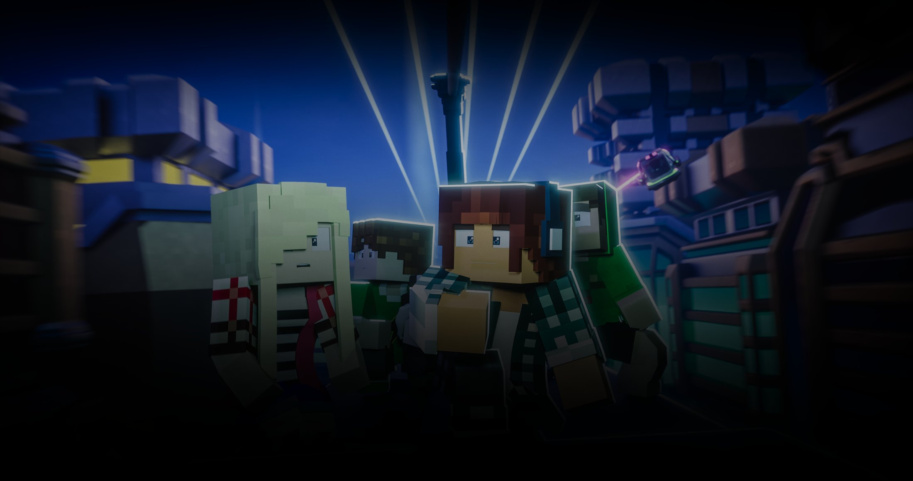
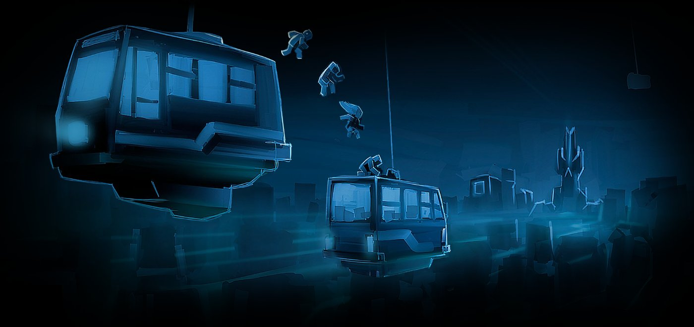
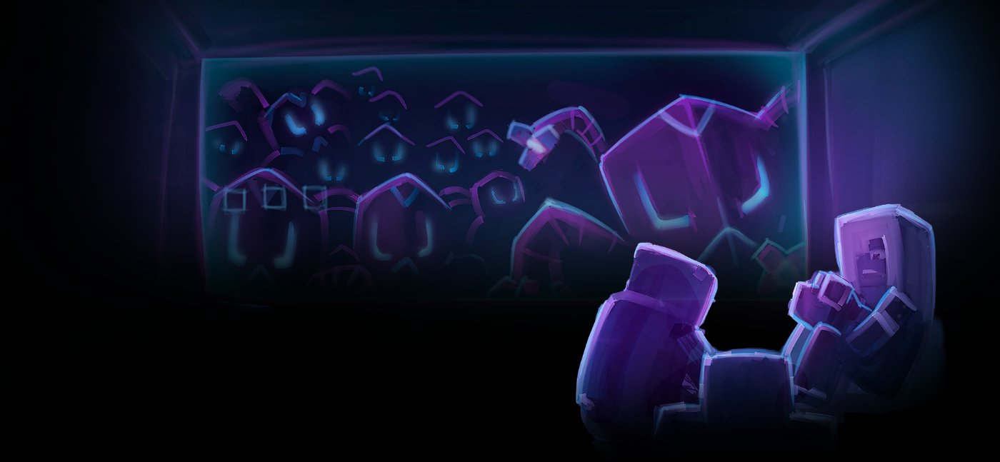
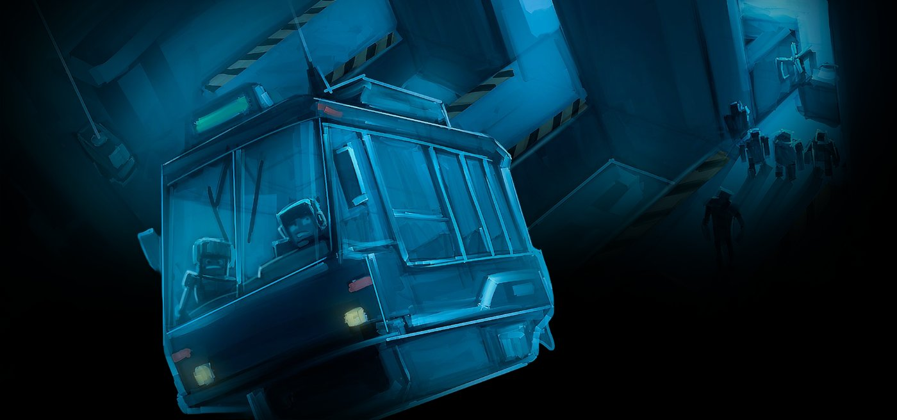
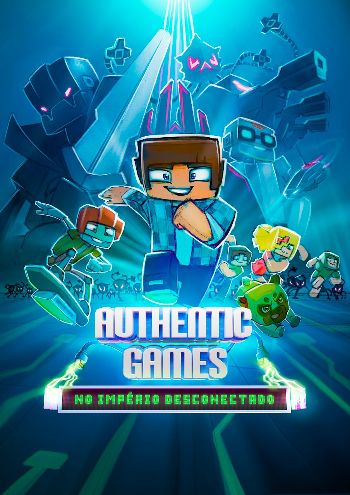
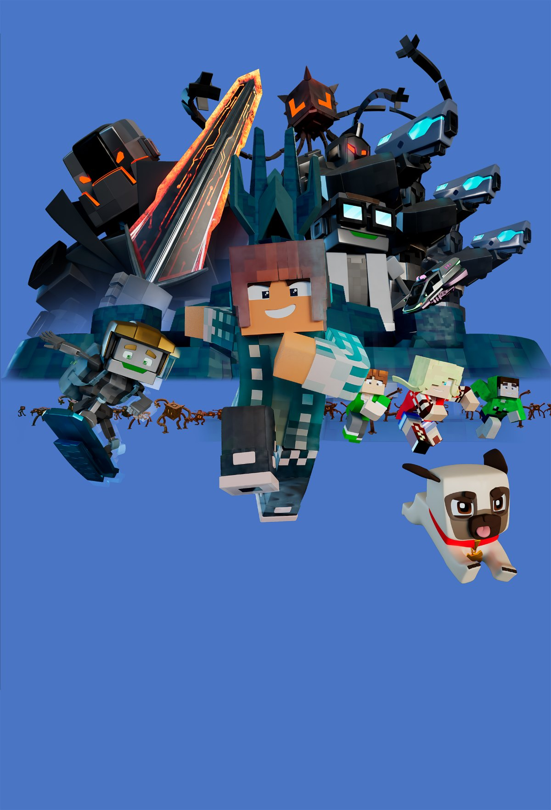
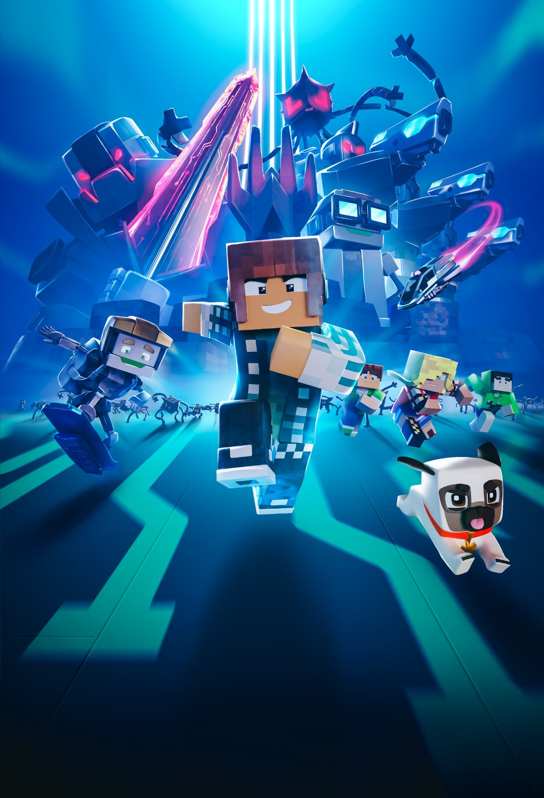

Authentic Games
No Império Desconectado
Opening title, post-production, credits and key art for a feature film released in cinemas and on Disney+.
Four stages of one film, from first frame to final poster.
Logo Opening Motion
Final Credits
Cinema Movie Cover
Marketing Material
Color Refinement
VFX
A universe of cubes, then a Big Bang.
final opening sequence
The concept was built around a space filled with cubes gradually emerging from the horizon and moving toward the camera, progressively taking over the screen until culminating in a Big Bang-inspired explosion.
The first challenge of the project was to develop the film’s opening sequence, introducing the Authentic Games: No Império Desconectado logo in a way that reinforced the technological universe of the story.
From this explosion, the film logo was launched toward the camera, while loose Ethernet cables generated electrical discharges around the title. The sequence combined different techniques in After Effects: the cubes were created using a particle system, while the electrical discharges were animated frame by frame, allowing for a more organic and controlled result.
particle system — cubes
DISCHARGES ANIMATION POLISH
logo entry
Every scene, refined and integrated.
I was responsible for the color refinement of the scenes and for applying VFX to specific sequences, working with elements such as reflections, lighting and additional effects to better integrate the 3D assets.
After completing the opening, I moved into the film’s post-production, taking on one of the most extensive stages of the project.
Alongside the visual work, I was also involved in editing the material and reviewing renders delivered by the 3D team. This required constant attention to detail to identify rendering issues, visual inconsistencies and technical problems that needed to be sent back for correction.
It was a demanding stage that required both visual precision and responsibility, particularly when dealing with a large amount of material and ensuring that issues were identified before the final delivery.
color refinement — before / after
color refinement
color refinement
vfx — glasses reflections
editing
editing
vfx — window reflections
Concept art, brought into motion.
final credits sequence
Instead of a traditional presentation based solely on a black screen, we turned static artwork from the film’s universe into animated environments.
I prepared the artwork in Photoshop, separating and rebuilding the necessary elements so they could be animated later in After Effects.
Using these originally static images, I created camera movements and different levels of depth through parallax, transforming the concept art into small animated scenes that accompanied the credits.



original concept art
From raw render to finished poster.

concept art

raw 3d render

cover design poster
motion cover
A significant part of the work was done manually — lighting, shadows and rim lights — so that every element felt as though it belonged to the same environment.
The initial composition had already been created by a concept artist and served as the visual foundation for the piece. My role was to turn this concept into a final piece using 3D character renders produced specifically to match the positions established in the original artwork.
I rebuilt the composition in Photoshop, combining image compositing, retouching and digital painting to bring the 3D renders closer to the visual language of the original concept — a hybrid process that transformed the 3D assets into a finished piece of visual communication.
process
process
process
Motion design, VFX, color refinement, editing, compositing, digital painting, graphic design and marketing, in the same production.
More than working on isolated deliverables, the project allowed me to follow the material through different stages of production — identifying problems, finding solutions and adapting the film’s visual language to different creative and communication needs.